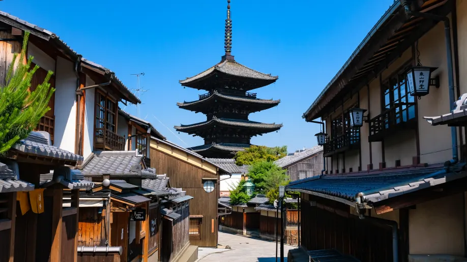

Explorando Quioto

Bem-vindo a Quioto: Uma Janela para a Tradição e Modernidade!
Localizada na região central do Japão, Quioto é uma cidade que harmoniza perfeitamente o passado glorioso com a modernidade vibrante do século XXI. Capital imperial por mais de mil anos, Quioto é reverenciada como o coração cultural do país, onde templos antigos, jardins zen meticulosamente cuidados e tradições seculares convivem com arranha-céus de vidro e tecnologia de ponta.
Cada rua de Quioto conta uma história de sua rica herança, desde o esplendor majestoso do Palácio Imperial até os santuários serenos escondidos nas montanhas circundantes. Em cada estação do ano, a cidade se transforma, revelando novas facetas de sua beleza: cerejeiras em flor na primavera, festivais vibrantes no verão, folhas de outono tingindo as colinas de tons dourados e um inverno sereno coberto de neve.
Prepare-se para explorar Quioto através deste site, onde você descobrirá guias detalhados, dicas de viagem, e muito mais para fazer da sua visita uma experiência inesquecível.
Gostaria de ler mais sobre Quioto? Aceda à: Wikipédia